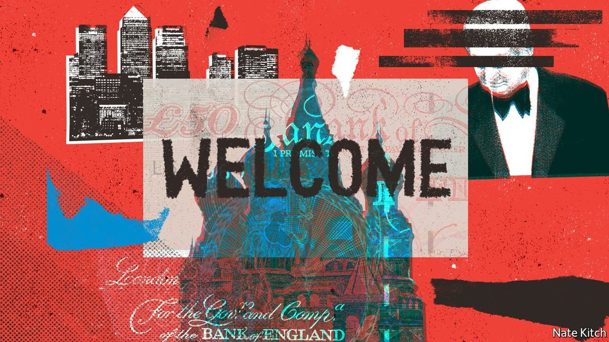
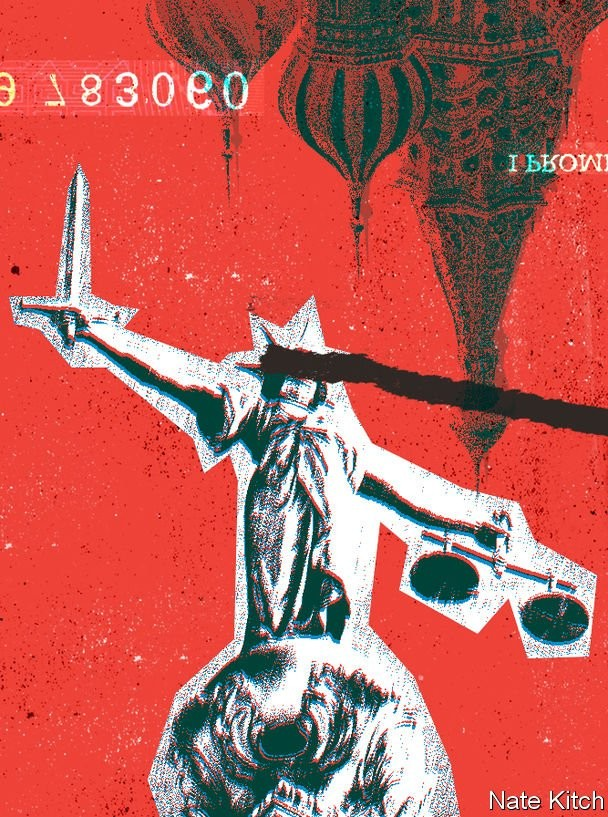
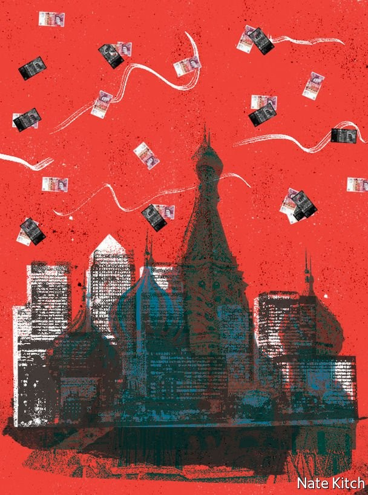
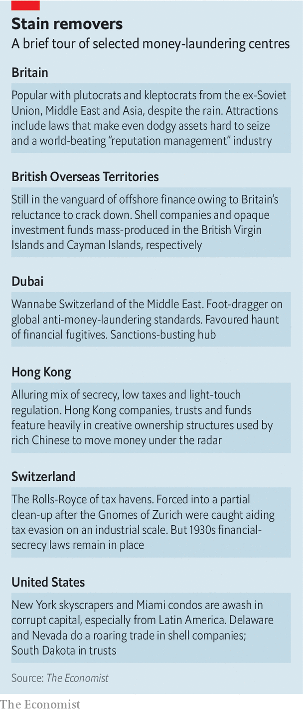

Why is London so attractive to tainted foreign money?
The war in Ukraine has prompted some action, but the problems run deep

FOR YEARS London has been awash in Russian money, much of it begrimed. Rich Russians flocked to the capital for a variety of reasons. Some were looking for a stable home for legitimate wealth. Some sought tax benefits. Others were seeking to launder dirty money, or to recycle wealth earned in circumstances which, though not brazenly criminal, looked corrupt to Western eyes.
Listen to this story.Enjoy more audio and podcasts on iOS or Android.
Listen to this story
Save time by listening to our audio articles as you multitask
With a huge financial centre and a preference for light-touch regulation, Britain was an ideal place to rinse stained money. The country is relaxed about foreign ownership of trophy assets, from newspapers to football clubs. London has oodles of luxury property, an ideal repository for large bundles of cash in need of washing. Lawyers, bankers and other professionals offer reassuringly discreet, and expensive, service. Add in the draw of top-notch schools and universities, and no wonder the National Crime Agency (NCA) thinks the country has a money-laundering problem amounting to £100bn ($125bn) a year.
Successive British governments did little to discourage the Russian influx. The war in Ukraine brought about an abrupt change. Britain has slapped sanctions on more than 1,600 individuals and businesses, including over 100 oligarchs and family members who got rich under President Vladimir Putin’s kleptocracy, or made sweet with him to keep fortunes intact.
A long-delayed economic-crime bill that makes it easier to prosecute international corruption cases was rushed through Parliament in March, less than three weeks after Russian forces entered Ukraine. The government has scrapped the investor-visa scheme, introduced by Sir John Major’s government in 1994, that allowed any foreigner with a few million pounds to spare who passed (fairly rudimentary) checks to buy residency.
The welcome mat is now being taken away from Russian oligarchs. But getting rid of the capital’s “Londongrad” nickname is a narrower and easier task than abating the overall flow of dirty money into Britain. The country has sought to attract footloose global capital for decades, and not just from post-Soviet countries: Chinese citizens have accounted for a third of the investor visas handed out since 2008. And noble attributes of Britain’s common-law system, which include independent courts and strong property rights, are attractive to illicit actors, too. “Criminal money seeks out many of the same protections as clean money. If you stole your wealth, you’ll be just as determined as anyone else not to have it stolen from you in turn,” says Jason Sharman of Cambridge University.
Reducing the amount of dirty money flowing into the country will therefore be hard. It requires further action in four areas in particular: the law itself; the conduct of those who practise it; the court system; and, above all, enforcement of the rules.
Lawmat London
Start with the law. As well as liking destinations that respect the rule of law, kleptocrats also flock to places where financial secrecy is most strongly enshrined. Britain is a curate’s egg. It was the first G20 country to introduce a public register of company owners, in 2016. But those who file false (or no) information are unlikely to get caught; if they are, penalties are not draconian.
It remains easy and cheap to set up opaque shell companies and partnerships. In his new book “Butler to the World”, Oliver Bullough describes how “Scottish limited partnerships” have proved especially popular with those washing dirty money from the former Soviet Union. And Britain remains umbilically tied to offshore territories, such as the British Virgin Islands, whose business model is built on financial secrecy (and whose premier was recently arrested in an American drug sting, further sullying the territory’s not-so-good name).
Another attraction for the scrutiny-shy is Britain’s libel law. Britain remains popular with “libel tourists”, foreigners with tenuous links to the country who bring cases there because they believe they have a better chance of winning. The Defamation Act of 2013 was intended to resolve this imbalance, but clever lawyers have “chiselled away” at what Parliament intended the law to do, says Caroline Kean of Wiggin, a law firm. For instance, the act aimed to codify a public-interest defence that had evolved through case law, by increasing protection for writers who “reasonably believed” that what they published was true. Lawyers for oligarchs have had a field day with those two words. “When motive is in play, clever solicitors can tie opponents in knots,” says Ms Kean.
The tactics used by such lawyers have become well-honed. They centre on firing off intimidatingly long letters to journalists or NGOs who are investigating their clients, with the aim of bullying them into backing down, typically not by force of legal argument (which is often flimsy) but by the prospect of ruinous costs as litigation, or just the threat of it, stretches on.
The government has proposed reforms to curb “lawfare”. These include strengthening the public-interest defence, capping costs claimants can recover and giving judges the right to throw spurious cases out earlier. Anti-corruption campaigners and an American congressman have called for visa bans and other sanctions against lawyers who work for dodgy plutocrats. Some of the firms accused of such conduct, including Carter-Ruck and Harbottle & Lewis, have issued statements denying that they have acted inappropriately.
The lawyers have another weapon, however. Employing innovative legal arguments, they have increasingly been using Britain’s privacy and data-protection laws to bring defamation-like cases. These argue that alleged privacy breaches damage their client’s public image. A legal claim by two oligarchs against HarperCollins over “Putin’s People”, a book by Catherine Belton, was based on arguments about data protection. Some defence lawyers say that privacy is becoming the new libel.
If the law is one area of concern, what lawyers are willing to do for clients is a second. “There is a more general problem of erosion of ethical standards” among British lawyers, says Robert Barrington of the Centre for the Study of Corruption at the University of Sussex. “The legal system has always been tilted in favour of those with more resources. But it has been pushed further out of kilter through the allure of cash from oligarchs and kleptocrats who should fail any reasonable due-diligence test.” Some of the richest Russian clients will pay more than double the £500-per-hour going rate for top solicitors. “This has played havoc with the moral compasses of many law firms,” adds Mr Barrington.
These navigational problems have been exacerbated by a broader trend. Under the old partnership model, the client may have come first but lawyers also took seriously their role as “officers of the court”, dedicated to serving the wider justice system. Over the past quarter-century the legal industry focused more on short-term financial performance. The big firms grew more “corporate”, less stable (as poaching increased) and less culturally cohesive. “This has driven a shift further towards the primacy of the client over duties to the court,” says Richard Moorhead of Exeter University.
Conduct unbecoming
Some lawyers justify working for oligarchs with reference to the right to representation enshrined in the UN’s “basic principles on the role of lawyers”. In reality, different rights compete. Article 14 of the basic principles says that lawyers “shall seek to uphold human rights” and “at all times act freely and diligently in accordance with the law and recognised standards and ethics of the legal profession”. Lawyers have a choice about whom they serve, unlike doctors, who are expected to treat even the most heinous criminal if he requires medical attention.
Lawyers’ views of how they should act particularly matter in Britain, argues Mr Barrington, because its legal system rests on the self-policing of behaviour. “One of the good things about our system is that it has been long-established with behavioural checks and balances. It was upheld and carried by the lawyers themselves. Now we are seeing what happens when those standards are upended.” He sees a parallel with politics, where concerns have grown that the system has been weakened by Boris Johnson’s breaking of uncodified norms.

But anyone expecting the legal regulator to tackle ethical slippage may be disappointed. Faced with growing complaints about lawyers taking Russian money, the Solicitors Regulation Authority (SRA) has promised more “spot checks” on the industry. But the SRA’s hybrid status—it is a legally independent arm of the Law Society, an industry association—does not inspire confidence. Though it can impose fines of up to £250m, its largest announced to date, against Mishcon de Reya for money-laundering failures, is £232,500.
The third problematic part of Britain’s legal system is its courts. British judges have a strong global reputation, but they can fall short in cases involving wealth accumulated in foreign jurisdictions with less respect for the rule of law. In particular, they sometimes give undue weight to questionable evidence submitted by the authorities of other countries. “Judges show too much credulity,” says a British lawyer. “They often take at face value witness statements, financial documents and other evidence provided by dodgy governments, because they are ‘official’. This is hugely consequential because many oligarchs are linked to people still in power in those countries who can control, or doctor, information flowing to the courts here.”
In April 2020 two relatives of former Kazakhstani president Nursultan Nazarbayev successfully challenged an attempt by the NCA to seize three London homes worth over £80m, which the agency believed had been acquired with dirty money. A report published in March by academics from the University of Exeter who specialise in cross-border corruption concluded that the ruling was flawed because the High Court judge in question had “accepted evidence from the Kazakhstani authorities that was likely tainted by political bias”. It also found that she did not question the reasons why Dariga Nazarbayeva, the ex-president’s daughter, and her son were using complex offshore structures.
British justice also suffers from a lack of transparency. Although many hearings are public, finding out in advance when and where they will take place is often a challenge. Information about cases, including transcripts, is hard and expensive to obtain. This stands in stark contrast to America, where full sets of transcripts and other documents in federal and state cases are readily and cheaply available (at ten cents a page, with a cap of $3 per document) via user-friendly public databases.
Another concern about the court system is the cost of justice for litigants. Britain, again in contrast to America, practises “costs-shifting”, in which the loser in a case pays some or all of the winner’s costs. This tilts the system in favour of those with very deep pockets, who will have no trouble picking up an opponent’s bill.
It also has the effect of ratcheting up legal fees. “Some lawyers might feel able to charge huge sums because they can argue to the client that if they win the other side will pay it,” says Frederick Wilmot-Smith, a barrister and author of “Equal Justice”, a book about inequities in legal systems. “It encourages a billing arms race.” Top London law firms have been known to charge £70,000 for a single court application.

High fees and costs-shifting do not deter plutocrats, who regularly take each other on in English courts and barely bat an eyelid at the expense. But even in moderately complex civil cases, says Mr Wilmot-Smith, “no sensible person worth less than tens of millions” would expose themselves to a court trial. He argues that the English legal system should be structured more like its health-care system, by severing the connection between trial resources and the allocation of lawyers.
Costs-shifting stymies not just private litigants but the authorities, too. The NCA, for instance, often shrinks from pursuing cross-border corruption cases for fear of having to pay out a hefty chunk of its budget should it lose. A former NCA investigator says he “almost gave my superiors a heart attack” when he wanted to freeze over $1bn in a corruption investigation linked to Nigeria. They balked, he said, fearing it could “sink our entire budget”.
The case documents were instead passed to a prosecutor in Italy who was keen to take the case to trial (one of the firms involved was Italian); the country’s well-funded, 60,000-strong Guardia di Finanza honed its skills following Mafia money trails. America, with large kleptocracy-focused budgets and habits of prosecutorial aggression (some prosecutors see taking on big cases as a career stepping-stone) is also far ahead of Britain when it comes to chasing down dirty money.
Enforcement is the fourth and most important part of the puzzle for ministers to solve. Britain’s overall budget for fighting economic crime is an underwhelming £850m, according to Spotlight on Corruption, an NGO. A mere £43m goes on tackling international corruption, bribery and the like, estimates Mr Barrington. It is no surprise, then, that few big cases are prosecuted. Between 2016 and 2021 the NCA did not secure a single conviction for high-level international corruption.
It did win two high-profile asset freezes using “unexplained wealth orders” (UWOs), but this new tool, too, has been disappointing. Britain introduced UWOs in 2017 as a way to make it easier to get results in kleptocracy and organised-crime cases, where proving that money in a bank account is corrupt or a mansion was corruptly obtained can be fiendishly difficult. They require the target to prove that their assets were bought using clean money, or face confiscation. But despite hopes of up to 20 UWOs a year, just four have been issued so far. None was against a prominent Russian figure.

When the NCA had its UWO against Ms Nazarbayeva and her son overturned, it was landed with a legal bill for £1.5m, roughly a third of the agency’s annual budget for international corruption cases. (To help tackle this problem, the new economic-crime act places a cap on costs in the event of a UWO being overturned.) According to Jonathan Benton, a former head of the NCA‘s corruption unit, the obstacles that prosecutors face in cases like this also include queasiness among judges about the legal underpinnings of UWOs, which “make sense in the context of the difficulties of bringing such cases but sit uneasily with the principle that you are innocent until proven guilty”.
The lack of enforcement resources affects the quality of both personnel and the technology that is key to investigations these days. Middle-level financial sleuths at the NCA get roughly the same pay as coppers on the beat, says Mr Benton; when he was there, some had to take a pay cut when transferring from the police. The structure of enforcement is sub-optimal, too. Britain does not have any overarching authority for its anti-corruption efforts. A study in 2016 found 66 separate “specialist enforcement, prevention, investigative and oversight agencies” involved in the policing of corruption-related offences, in addition to 45 regional police forces.
Penalties for banks, lawyers and other “enablers” of dirty money are paltry. Even for banks, fines for money-laundering lapses rarely exceed a few tens of millions of pounds, small change for many. Lawyers who turn a blind eye can expect no more than a rap on the knuckles. Several British estate agents filmed undercover for a documentary seemed unconcerned when the “buyer” said they were using funds stolen from the Russian state budget.
A report published by Chatham House, a think-tank, in 2021, was damningly titled “The UK’s kleptocracy problem”. It described how Britain has adopted a “risk-based” approach to anti-money-laundering, whereby much of the front-line policing is delegated to banks, lawyers and others in the private sector. But, it concludes, “failures of enforcement and implementation of the law—plus the exploitation of loopholes by professional enablers—have meant that little has been done in practice to prevent kleptocratic wealth and political agendas from entering Britain.”
The upshot of all this was encapsulated in the report’s subtitle: “How servicing post-Soviet elites weakens the rule of law.” The British authorities are turning their backs on Mr Putin and his cronies. But the cracks in the foundations of Britain’s legal system that allowed Russian loot to flow into London will be harder to close. ■